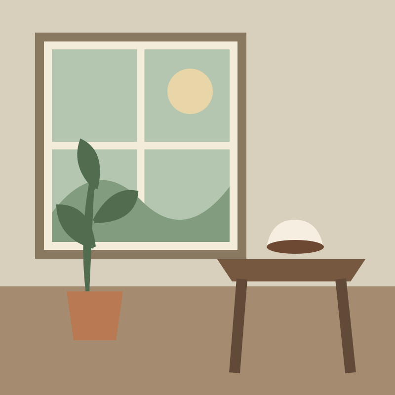

重視風味
從咖啡豆的選擇開始，欣賞每一杯咖啡獨有的香氣。
OUR STORY
一杯咖啡，一個讓生活慢下來的地方。

HOW IT BEGAN
綠地咖啡的故事，始於對咖啡與日常的喜愛。我們想像一個地方，讓人能暫時放下匆忙，在熟悉的香氣中，好好感受當下。
無論是獨自閱讀，還是和朋友聊聊近況，都能在這裡找到適合自己的步調。
WHAT WE BELIEVE
把心意放進每個細節，
讓平凡的日子更有滋味。
從咖啡豆的選擇開始，欣賞每一杯咖啡獨有的香氣。
以細心的態度做好每個步驟，讓簡單的日常多一點溫度。
期待營造舒適的空間，讓每個人都能用自己的方式停留。
A PLACE TO PAUSE
自然的色調、柔和的光線，與一杯散發香氣的咖啡。我們想像的空間，是可以讓心情慢慢舒展的地方。
前往聯絡我們